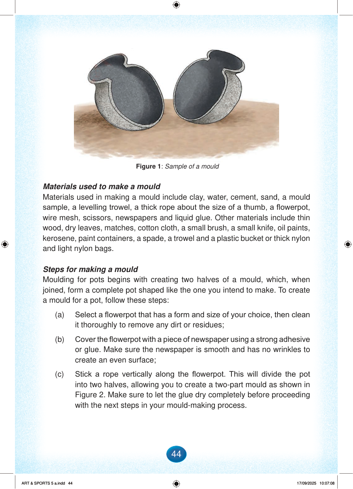

Page background
Figure 1: Sample of a mould
Materials used to make a mould
Materials used in making a mould include clay, water, cement, sand, a mould sample, a levelling trowel, a thick rope about the size of a thumb, a flowerpot, wire mesh, scissors, newspapers and liquid glue.
Other materials include thin wood, dry leaves, matches, cotton cloth, a small brush, a small knife, oil paints, kerosene, paint containers, a spade, a trowel and a plastic bucket or thick nylon and light nylon bags.
Steps for making a mould
Moulding for pots begins with creating two halves of a mould, which, when joined, form a complete pot shaped like the one you intend to make.
To create a mould for a pot, follow these steps:
(a)
Select a flowerpot that has a form and size of your choice, then clean it thoroughly to remove any dirt or residues;
(b)
Cover the flowerpot with a piece of newspaper using a strong adhesive or glue.
Make sure the newspaper is smooth and has no wrinkles to create an even surface;
(c)
Stick a rope vertically along the flowerpot.
This will divide the pot into two halves, allowing you to create a two-part mould as shown in Figure 2.
Make sure to let the glue dry completely before proceeding with the next steps in your mould-making process.